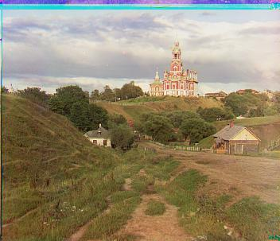
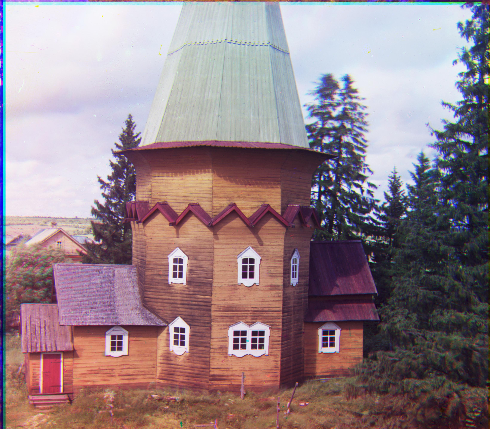

Colorizing the Prokudin-Gorskii Photo Collection
CS 194-26 Project 1 Fall 2020
Glenn Wysen
Overview
This project's main goal was to take black and white photos taken by Sergey Mikhaylovich Prokudin-Gorsky in the early 1900s and turn them into color photos. Prokudin-Gorsky took each photo three times with a different color filter (RGB) in front of the each time. By aligning these images and mapping their intensities to the RGB color channels, I was able to recreate some strikingly vivid images from three black and white photos.
Implementation
To start, I read in the raw photo strips (Fig.2) and divided each one into its three components. To align two images I took the L2 norm (also known as the Sum of Squared Differences (SSD)) distance between them as I translated one image around a 15 by 15 pixel area. The translation with the minimum SSD should theoretically be the translation that lines up the best with the other image. However, I ran into issues with this algorithm due to the different borders around each photo. To solve this, before aligning each image I cropped 5% off every side. This made the alignment process less dependent on meaningless borders and more dependent on the inner part of the photo that I was actually trying to align.
After aligning each image, I was able to take the intensities of each filtered plate and put those into their corresponding color channel to create a final color image (Fig.3).

Calculated Offsets
To the right are the offsets I used for the red and green channels of each image. Each offset was calculated by comparing the red or green channel image to the blue channel image. Images marked with a * ended up not aligning properly at the end. This is most likely due to an aspect of the images that my algorithm wasn't able to fix. If I implemented rotational correction as well as translational correction I imagine these two images would align closer.
Example Images
| Image Name | Offset - Green | Offset - Red |
|---|---|---|
| cathedral.jpg | [5, 2] | [12, 3] |
| monastery.jpg | [-3, 2] | [3, 2] |
| tobolsk.jpg | [3, 3] | [6, 3] |
| castle.tif | [35, 3] | [98, 3] |
| emir.tif | [49, 23] | [107, 40] |
| harvesters.tif | [60, 17] | [123, 13] |
| icon.tif | [42, 17] | [90, 23] |
| lady.tif | [56, 9] | [119, 13] |
| melons.tif* | [80, 10] | [106, -10] |
| onion_church.tif | [52, 25] | [108, 36] |
| self_portrait.tif* | [78, 29] | [92, -15] |
| three_generations.tif | [54, 12] | [119, 9] |
| train.tif | [42, 4] | [85, 30] |
| workshop.tif | [52, -1] | [102, -12] |